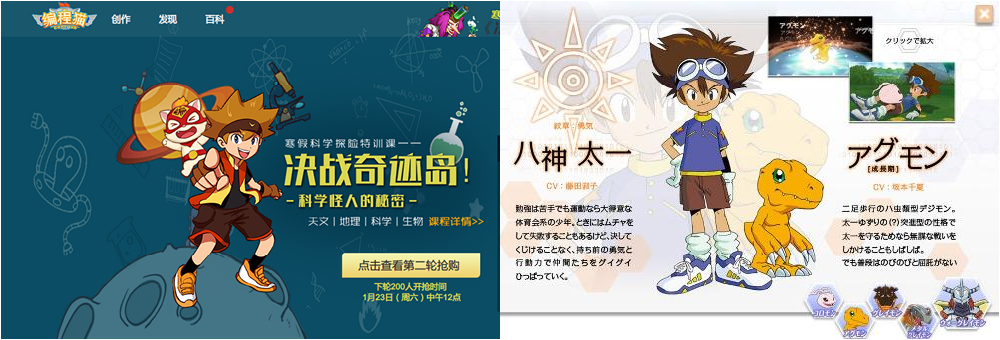
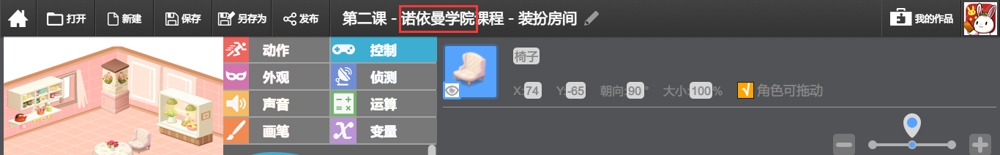
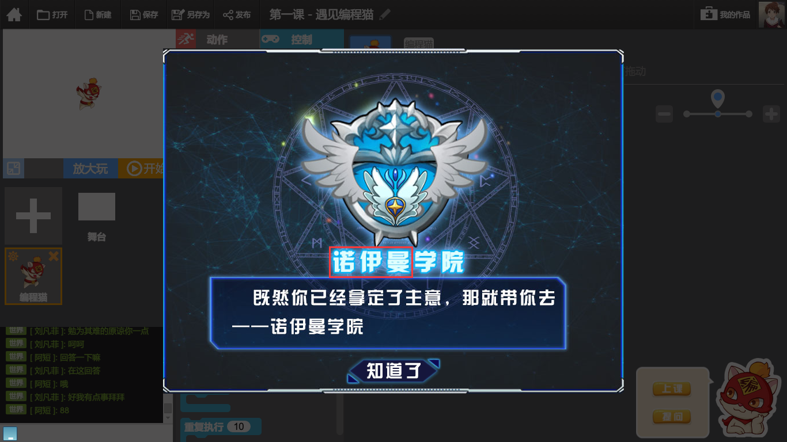
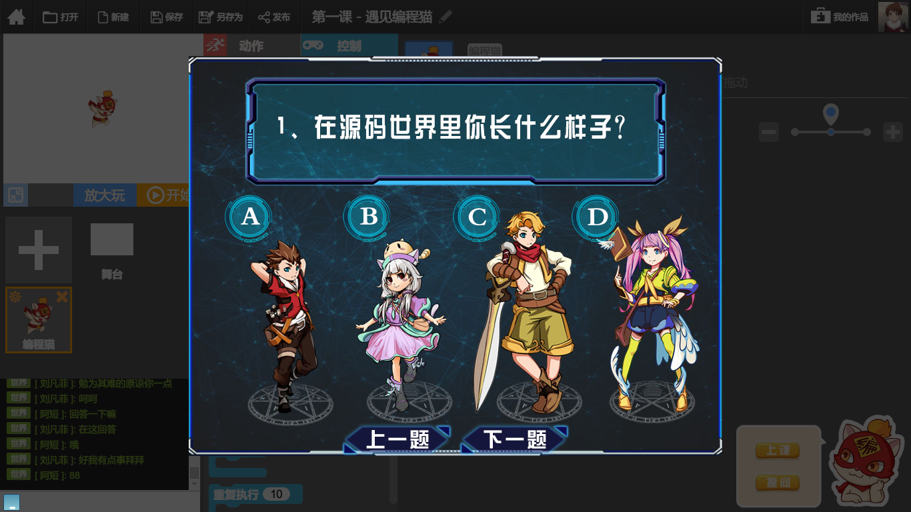

面试职位：少儿文学写作创作
编程猫 - 个人产品体验报告 via 黄志伟
1. 理念
编程猫倡导极客创新教育理念，区别于其它说教类互联网教育产品，编程猫(www.codemao.cn)的核心优势在于融合当前国际领先的教育理念，将「可汗式+创客教育」这种寓教于乐的教学方式与当前中国教育模式深度结合，营造「动漫+游戏」的学习场景，开发一系列符合中国少年儿童的编程课程，致力打造中国「最有趣的少儿编程教育」平台。(《编程猫：搭建中国小极客通往世界的平台》)
2. 体验
个人稍微体验了半小时左右，感觉整个流程还是比较轻松愉快的：选择关卡进入对应页面 -> 观看教学视频，然后根据提示进行创作 -> 保存然后退出或者进入下一关，没有太大的脑力负担，很适合小朋友学习或者玩耍。
稍微讲讲几点最深的个人体验：
2.1 专注于少儿编程教学，进一步细分潜在用户群。
相比其他以大学生或者成年人为受众的技能培养型的互联网教育产品，应该说少儿编程教学应该算得上是一个蓝海或者利基市场，前景还是相对广阔。而国内随着社会和经济的进一步发展，政府和家长们势必也会越来越注意孩童的早期启蒙教育，毕竟 兴趣 和 眼界 对青春期儿童影响较大。
2.2 类似于搭积木的模块化编程教学，降低了准入门槛。
自己之前也参加或类似的课程，比如说国外的「编程一小时」(The Hour of Code) 活动，这项活动得到了奥巴马、比尔·盖茨、马克·扎克伯格等名人支持，2015年12月中旬苹果应用商店也推出其活动专题页面，应该说这是一个未来教育的趋势。另外，可能也因为是借鉴了国外相关的项目的经验，编程猫在「创作」页面的游戏UI设计的风格非常类似于之前Facebook推出的「编程一小时」游戏系列。
2.3 自定制性比较强，借助用户生产内容(User Generated Content)。
作为一款少儿教育产品，借助孩童纯真且富有想象力的天性来为社区创作内容，能够极大地丰富和扩展产品本身，也能让小朋友有归属感，这是编程猫的创新之处。
2.4 接近于联机游戏的浏览体验
比如说「世界」频道聊天系统，还有「勋章」系统，今后网站的功能架构完全可以参考一些游戏策划的心理学知识或者思路，比如说成就系统、等级系统、进度条、点数系统、任务挑战、倒计时、奖励系统、实时系统等等，至于心理学知识则有：心流理论、社会比较理论、折射荣誉效应、自决理论。
2.5 包括文案和原画，产品内容参考借鉴了很多第三方设定。
比如说「精灵图鉴」的设定借鉴了日本动画《宠物小精灵》，「编程第一课」之后的学院选择环节应该是借鉴了英国作家JK·罗琳的《哈利波特》系列作品中的 分院帽 设定。关于 「源码大陆」 的设定借鉴了日本东映动画公司出品的电视动画《数码宝贝》的背景世界观设定。
但是也存在一些问题：比如说如果百度搜索「编程猫」的话，第一条搜索结果指向了编程猫的官网，而其右方附图明显是参考了日本国民级少年漫画《海贼王》的男主人公蒙其·D·路飞的人设。
另外，目前登陆编程猫官网首页，占据页面大部分的欢迎人物 —— 少年男 恐怕也是参考了日本东映动画公司电视动画《数码宝贝》第一部男主角「八神太一」的人设，气质和人物轮廓相似度较高。虽然说集百家之长才能融会贯通，但是部分网页原画人设相似度过高，今后有可能引来版权纠纷或者被其爱好者杯葛，建议还是以扬长弃短为主，尽可能自主创新。

3. 建议
3.1 互动版块如「百科」亟待完善
目前「百科」版块稍显简陋，可以考虑撰写官方攻略指南或者发起征文比赛丰富这一板块。
3.2 前端页面有虫，文本出现低级错误
比如说关于「诺伊曼学院」，不同页面文字表述不同，有的表述为「诺依曼学院」，正确表述应该为「诺伊曼学院」。


3.3 部分二次元动漫画风很讨人喜欢，希望能够继续保持

个人经验是，偏萌系日韩系画风比较讨儿童喜欢，美漫系画风可能过于粗犷。
3.4 继续完善背后剧情世界观建设
可以考虑制作一些优秀的剧情关卡，比如说个人想到的可以参考中国的传统文化，比如说四大名著，例如可以参考明代吴承恩的作品《西游记》的背景设定，也出个闯关型的剧情任务如「猫游记」或者「喵游记」，甚至考虑出品一些收费的独立游戏应用，上线应用商店，尽可能以其精致的内容品质，提高品牌知名度，获取潜在受众关注。
4. 致谢
以上是个人从用户角度对于「编程猫」的零碎思考，希望能够给各位带来思路上的一些启发，谢谢阅读。